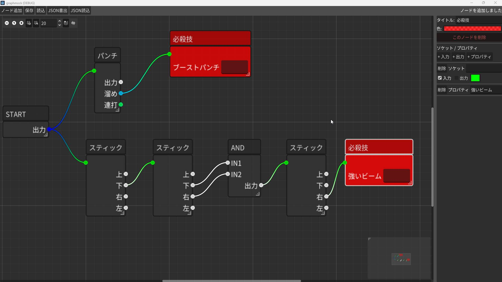
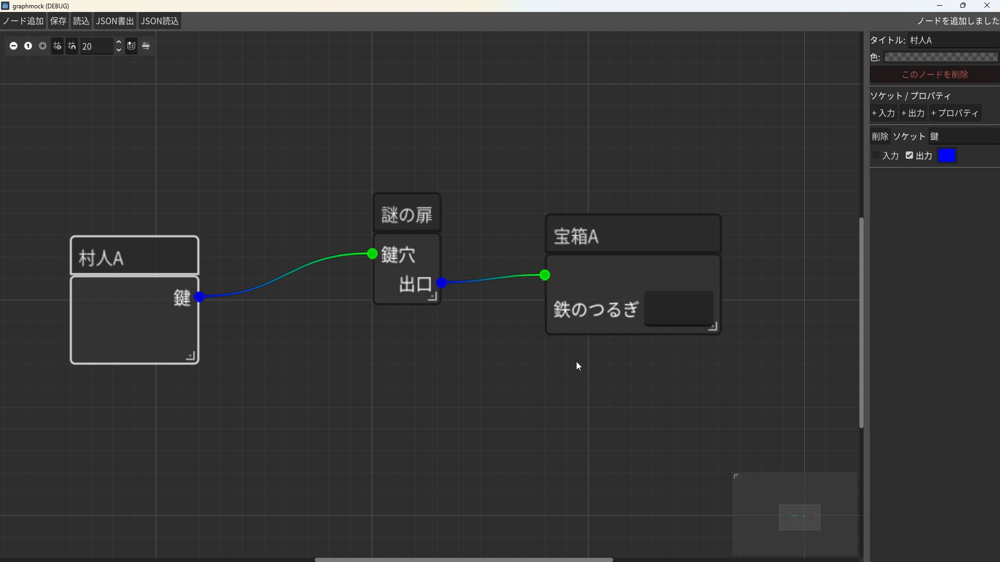

Godot 4.6 Tool Mockup
GraphMock: Visual Mockup Tool
ノードベースのインターフェース設計のためのビジュアルモックアップ作成ツールです。ノーコード開発プラットフォームのUI検討や、複雑なノード構造の可視化を目的として制作しました。
Playable Area
Launch Tool
注意: Godot 4.6製のため、一部ブラウザ環境や端末によっては動作しない、もしくは重い場合があります。
Screenshot
Screenshots

